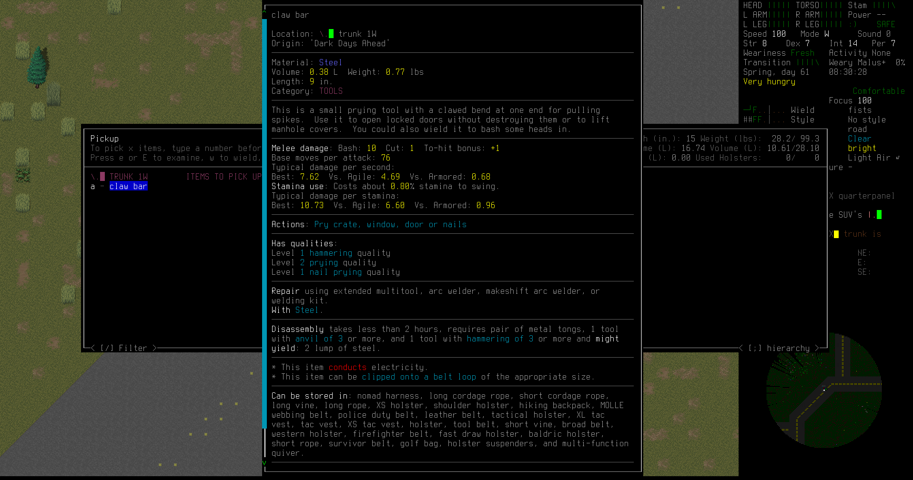
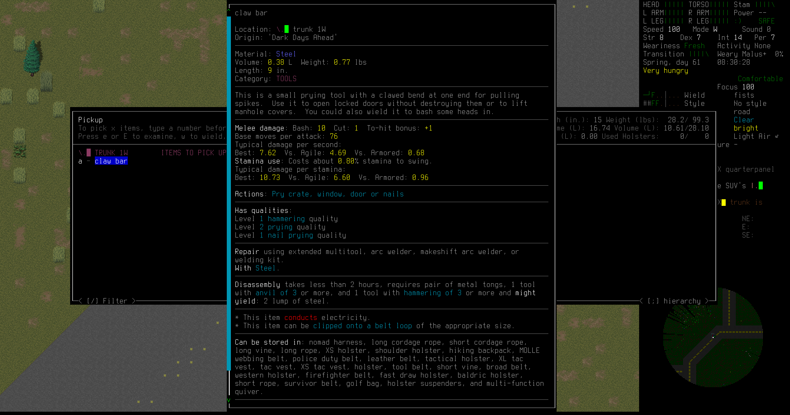

It's time for a new Cataclysm: Dark Days Ahead let's play!
Erik Otto is a former used car salesman shunted away to one of the many FEMA evacuation shelters during the end of the world. He's extremely intelligent, very sociable, and attractive. If he hadn't been a used car salesman, he always thought that he'd make a good cult leader. Well, now that the apocalypse has arrived, now is the chance for the Cult of Erik to arise.
It's just Erik Otto and Alejandro Quick in this evacuation shelter. Erik is dressed fine in his suit and dress shoes, sporting a gold watch. Alejandro, on the other hand, is wielding an SKS rifle and wearing explorer's gear. He was a little more prepared when they got shunted off to the FEMA evacuation shelters. After a night of regaining their senses, they came upstairs. The shelter is no place to stay; clearly no help is coming. Erik decides to persuade Alejandro to come with him. It might be good to have someone like Alejandro escorting him to safer territory.

Erik is a smooth talker, and his looks don't hurt his chances. He easily convinces Alejandro to keep him safe. Now Alejandro is his loyal follower until one of them dies. Hopefully not Erik.
Erik uses the evac shelter console to figure out the route to the regional refugee center. That place should have a lot more people, survivors of the end of the world. It's not even that far by road.

Erik and Alejandro hit the road. They plan to walk all the way to the refugee center, avoiding any trouble along the way. If they do have difficulty, Alejandro can just shoot it.

Erik grabbed up a bunch of useful food, supplies, and medicine from the evac shelter. He's got a lacking inventory heading into this hike: no weapon, but at least he has an emergency blanket!
There's a military roadblock set up on the road outside the evac shelter. Zombie soldiers are attacking a riot controll turret. It's shooting them, and they can't bash through its military-grade steel armor, so they're keeping themselves busy.
Erik and Alejandro sneak to the south of the roadblock. Neither the zombies nor the turrets notice them. Erik does plan to return here eventually, when he can kill those zombies and evade the turret, because the soldiers dropped a bunch of guns and ammo on the ground when they were... turned.
There's a little cabin in the woods by the road, the first signs of residence they've found so far. Erik decides to check it out.
 
